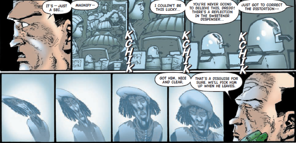

Roffman was a PSU (Public Surveillance Unit) analyst working under Jura Edgar who became a key aid during many of Dredd's investigations.
Art by Henry Flint & Chris Blythe
| Story Title | Parts | Pages | w indicates a wraparound coverCovers | Year(s) | Issues | Writer | Artist | Colourist | Letterer |
|---|---|---|---|---|---|---|---|---|---|
From Judge DreddThe Cal Files | 5 | 30 | 959: Dougie Braithwaite 963: Dougie Braithwaite 2 | 1995 | 959-963 | John Wagner | John Burns | <-- | Tom Frame |
From Judge Dredd Doomsday arc: prog/meg crossover.Doomsday | 4 | 60 | M3.56: Duncan Fegredo M3.57: Kevin Walker M3.59: Greg Staples 3 | 1999 | M3.56-M3.59 | John Wagner | Colin Wilson: 1‑2 Mike Collins: 3‑4 various | Janet Gale: 1‑2 Alan Craddock: 3‑4 various | Tom Frame |
From Judge DreddLawcon | 4 | 48 | M3.76: Dylan Teague and Chris Blythe M3.79: Richard Elson and Chris Blythe 2 | 2001 | Reprints: M277 (supplement)M3.76-M3.79 | John Wagner | Richard Elson | <-- | Tom Frame |
From Judge DreddTotal War | 12 | 72 | 1410: Nick Percival 1414: Simon Parr 1417: Simon Coleby 3 | 2004 | 1408-1419 | John Wagner | Henry Flint | Chris Blythe | Tom Frame |
From Judge DreddBlood Trails | 10 | 60 | 0 | 2005 | 1440-1449 | Gordon Rennie | Andrew Currie | Chris Blythe | Tom Frame |
From Judge DreddJumped | 4 | 25 | 1494: Nick Percival 1 | 2006 | 1491-1494 | John Smith | Simon Fraser | Gary Caldwell | Annie Parkhouse |
From Judge Dredd Featuring The Fargo Clan.…Regrets | 5 | 30 | 1579: Karl Richardson 1 | 2008 | 1577-1581 | John Wagner | Nick Dyer | Chris Blythe | Annie Parkhouse |
From Judge DreddOne for the Boys | 1 | 12 | 0 | 2008 | p2009 | John Wagner | Henry Flint | Chris Blythe | Annie Parkhouse |
From Judge Dredd Main subtitle: "Day of Chaos".Nadia | 8 | 49 | 1743: Clint Langley 1749: Garry Brown 2 | 2011 | 1743-1749 | John Wagner | Ben Willsher | Chris Blythe | Annie Parkhouse |
From Judge Dredd Part of the Trifecta build‑up. Featuring Judge Buell.The Cold Deck | 6 | 36 | 1808: Edmund Bagwell 1 | 2012 | 1806-1811 | Al Ewing | Henry Flint | Chris Blythe | Annie Parkhouse |
| year | episodes | pages |
| 1993 | 0 | 0 |
| 1994 | 0 | 0 |
| 1995 | 5 | 30 |
| 1996 | 0 | 0 |
| 1997 | 0 | 0 |
| 1998 | 0 | 0 |
| 1999 | 4 | 60 |
| 2000 | 0 | 0 |
| 2001 | 4 | 48 |
| 2002 | 0 | 0 |
| 2003 | 0 | 0 |
| 2004 | 12 | 72 |
| 2005 | 10 | 60 |
| 2006 | 4 | 25 |
| 2007 | 0 | 0 |
| 2008 | 6 | 42 |
| 2009 | 0 | 0 |
| 2010 | 0 | 0 |
| 2011 | 8 | 49 |
| 2012 | 6 | 36 |
| 2013 | 0 | 0 |
| 2014 | 0 | 0 |